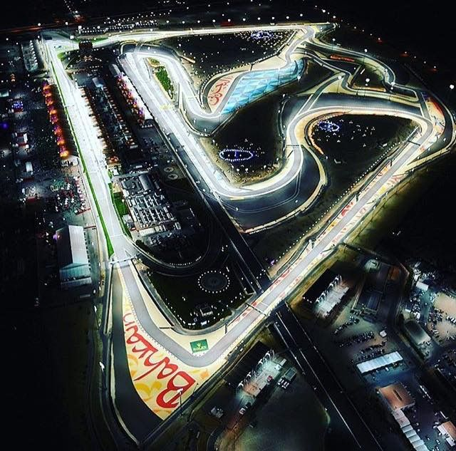

Bahrain International Circuit

Technical Details
Location: Sakhir, Bahrain
Length: 5.412 km
Giri: 57
First GP: 2004
Curiosities
The Bahrain International Circuit brought Formula 1 to the Middle East in 2004 and is known for its desert setting and night racing. It was the first F1 circuit in the region and introduced floodlit racing in 2014. The track often produces close racing due to its heavy braking zones and traction-heavy corners. Sand blowing onto the circuit can also affect grip levels.